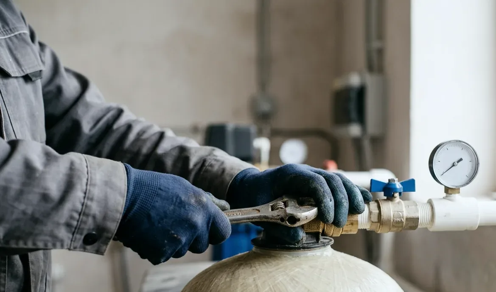

Состав услуги
- доставка – если подтверждена в предложении;
- расстановка и сборка оборудования;
- обвязка и байпас по согласованной схеме;
- подключение дренажа и электричества в границах;
- промывка, настройка и запуск.
До приезда бригады согласуем схему, место, коммуникации и границы сметы. После монтажа клиент получает не набор баллонов, а понятную работающую систему.

Проверяем готовность места, коммуникаций и совпадение поставки со спецификацией.
Раскладываем работу на строки – обвязка, байпас, слив, электрика – и отдельно перечисляем то, что в смету не входит и требует согласования.
Собираем, промываем, программируем автоматику и проверяем работу при водоразборе.
На месте объясняем, какой кран за что отвечает, оставляем записанные настройки клапанов и порядок действий, если воду придётся срочно перекрыть.
Что должно быть решено до монтажа.
ОткрытьОборудование, работа и материалы отдельно.
ОткрытьРегламент после запуска.
ОткрытьЕсли ступень одна и коммуникации готовы – это установка фильтра. Под ключ имеет смысл, когда ступеней несколько, нужны байпас, дренаж, электричество и настройка режимов, а запуск проверяется под реальным водоразбором. Границу мы проговариваем до сметы, чтобы не продавать больший объём, чем требуется.
Состав работ, спецификация оборудования, схема обвязки, что считается отдельно, порядок расчёта и условия гарантии. Отдельно фиксируются исключения – то, чего в смете нет: строительные работы, переделка септика или электросети. Список исключений защищает обе стороны сильнее, чем список включённого.
Промывка сбрасывается залпом, и для станции с биологической очисткой это чувствительно, а у умягчителя сток вдобавок солёный. Поэтому слив чаще уводят в отдельный дренажный колодец, накопитель или мимо септика, с разрывом струи и защитой от промерзания. Решение по сливу принимается до монтажа, а не после первой регенерации.
За монтаж, обвязку, герметичность и настройку отвечает тот, кто это делал, то есть мы. За характеристики оборудования и заводские дефекты отвечает поставщик. Поэтому в документах работы и оборудование разделены – так понятно, к кому идти с каждым вопросом.
Просите показать полный цикл промывки на каждой колонне, работу байпаса, отсутствие течей под нагрузкой и напор при одновременно открытых точках. Настройки клапана должны быть записаны и объяснены – на что влияет каждый параметр. Приёмка, где просто показывают собранные баллоны, ничего не подтверждает.
Ответим, что проверить и сколько это будет стоить.